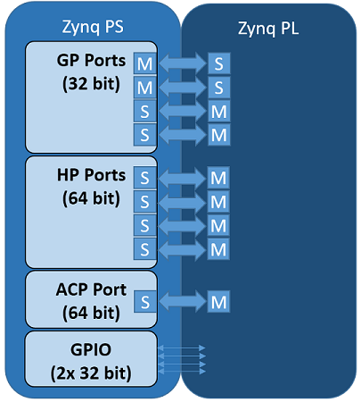
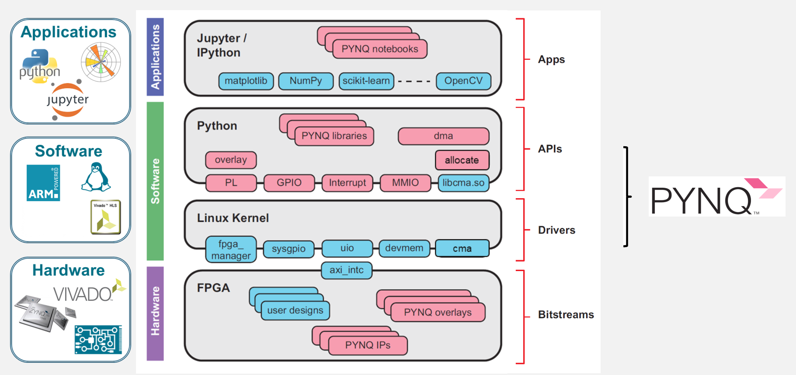

VivadoAccelerator
The VivadoAccelerator backend of hls4ml leverages the PYNQ software stack to easily deploy models on supported devices.
Currently hls4ml supports the following boards:
pynq-z2 (part:
xc7z020clg400-1)zcu102 (part:
xczu9eg-ffvb1156-2-e)alveo-u50 (part:
xcu50-fsvh2104-2-e)alveo-u250 (part:
xcu250-figd2104-2L-e)alveo-u200 (part:
xcu200-fsgd2104-2-e)alveo-u280 (part:
xcu280-fsvh2892-2L-e)
but, in principle, support can be extended to any board supported by PYNQ. For the Zynq-based boards, there are two components: an ARM-based processing system (PS) and FPGA-based programmable logic (PL), with various interfaces between the two.
{kind=link}

Neural Network Overlay
In the PYNQ project, programmable logic circuits are presented as hardware libraries called overlays.
The overlay can be accessed through a Python API.
In hls4ml, we create a custom neural network overlay, which sends and receives data via AXI stream.
The target device is programmed using a bitfile that is generated by the VivadoAccelerator backend.
{kind=link}

Example
This example is taken from part 7 of the hls4ml tutorial.
Specifically, we’ll deploy a model on a pynq-z2 board.
First, we generate the bitfile from a Keras model model and a config.
import hls4ml
config = hls4ml.utils.config_from_keras_model(model, granularity='name')
hls_model = hls4ml.converters.convert_from_keras_model(model,
hls_config=config,
output_dir='hls4ml_prj_pynq',
backend='VivadoAccelerator',
board='pynq-z2')
hls4ml.build(bitfile=True)
After this command completes, we will need to package up the bitfile, hardware handoff, and Python driver to copy to the PS of the board.
mkdir -p package
cp hls4ml_prj_pynq/myproject_vivado_accelerator/project_1.runs/impl_1/design_1_wrapper.bit package/hls4ml_nn.bit
cp hls4ml_prj_pynq/myproject_vivado_accelerator/project_1.srcs/sources_1/bd/design_1/hw_handoff/design_1.hwh package/hls4ml_nn.hwh
cp hls4ml_prj_pynq/axi_stream_driver.py package/
tar -czvf package.tar.gz -C package/ .
Then we can copy this package to the PS of the board and untar it.
Finally, on the PS in Python we can create a NeuralNetworkOverlay object, which will download the bitfile onto the PL of the board.
We also must provide the shapes of our input and output data, X_test.shape and y_test.shape, respectively, to allocate the buffers for the data transfer.
The predict method will send the input data to the PL and return the output data y_hw.
from axi_stream_driver import NeuralNetworkOverlay
nn = NeuralNetworkOverlay('hls4ml_nn.bit', X_test.shape, y_test.shape)
y_hw, latency, throughput = nn.predict(X_test, profile=True)
Coyote
The Coyote backend of hls4ml leverages the Coyote shell to easily deploy models on PCIe-attached Alveo FPGAs.
Coyote is an open-source, research shell that facilitates the deployment of applications on FPGAs, as well as the integration of FPGAs into larger computer systems.
Some of its features include:
- Multi-tenancy
- Virtualized memory
- Optimized data movement
- Dynamic reconfiguration
- Automatic work scheduling and memory striping
- Networking for distributed applications
The list of supported boards is available in the Coyote documentation. The current Coyote backend can be used to deploy hls4ml models from both Python and C++. While the focus of the current backend is on the inference, it can easily be extended to support dynamic reconfiguration of models, as well as distributed inference across multiple FPGAs.
CoyoteOverlay
Similar to the VivadoAccelerator backend, the Coyote backend creates a custom neural network overlay that interacts with the FPGA. This overlay can be used to provide inputs, run inference and retrieve the predictions. Additionally, the overlay provides a utility functon to load the model bitstream and driver for some clusters. On others, the users need to manually load the bitstream and driver. For guidance, see the Coyote documentation..
Note
To use the Coyote backend, hls4ml must be cloned with submodules using git clone --recurse-submodules.
Additionally, a full Vivado/Vitis installation is required to synthesize the hardware and compile the host software.
C++ binary
Additionally, the Coyote backend generates and compiles a C++ program that can be used to run inference on the FPGA.
The binary can be found in <hls4ml-output-dir>/build/<project-name>_cyt_sw/bin/test and when launched, it will
run inference using the inputs from tb_data. Similar to the Python overlay, the bitstream and driver must be loaded before running the inference.
Example
Similar to the VivadoAccelerator``backend, we first generate a bitstream from a Keras model ``model and a config.
import hls4ml
config = hls4ml.utils.config_from_keras_model(model, granularity='name')
hls_model = hls4ml.converters.convert_from_keras_model(model,
hls_config=config,
output_dir='hls4ml_prj_coyote',
backend='Coyote',
board='u55c')
hls_model.build(bitfile=True)
After this command completes, the FPGA must be programmed with the bistream. Additionally, the Coyote driver must be loaded. For some platforms, Coyote provides utility functions to load the bitstream and driver. For others, this can be achieved using the Vivado hardware manager and Linux commands. More detail can be found in the Coyote documentation..
Finally, we can create a CoyoteOverlay object, which can be used to run inference on the FPGA. Additionally, the overlay provides a utility
functon to load the model bitstream and driver for some clusters.
When running inference, we must provide the input tensor and the shape of the output tensor (to allocate the buffers for the data transfer).
Optionally, batch size can be specified..
The predict method will send the input data to the FPGA and return the output data y_hw.
from hls4ml.backends.coyote import CoyoteOverlay
overlay = CoyoteOverlay('hls4ml_prj_coyote')
y_hw = overlay.predict(x, (1, ), BATCH_SIZE)